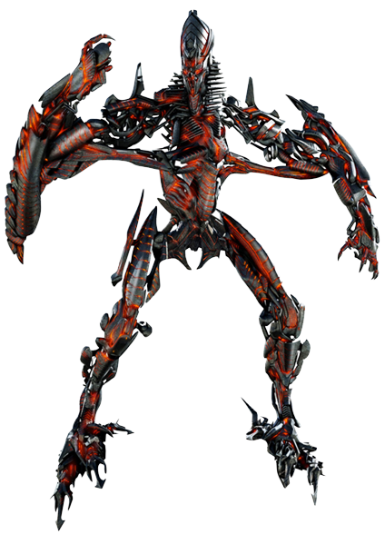

Nếu những Transformers đầu tiên là đệ tử của Primus , thì The Fallen chính là Judas của hắn. Vào buổi bình minh của thời gian, anh ta là Megatronus , một trong những người anh em của những sinh vật vô cùng mạnh mẽ cống hiến cho sự thịnh vượng của thế giới của họ. Nhưng The Fallen sẽ có được biệt danh hiện tại bằng cách quay lưng lại với anh trai Primes và mục đích theo đuổi mục đích của riêng mình, đồng thời kiếm được biệt danh "Decepticon đầu tiên" trong quá trình này. Hình dạng đáng sợ của anh ta là một chiếc lồng kim loại dành cho các thế lực hỗn loạn nguyên thủy đang cháy , khiến anh ta trông giống như một lò lửa sống. Những lực lượng giống như cái vạc này đã thanh trừng anh ta về sự đồng cảm và đạo đức còn sót lại; tất cả những gì còn lại bây giờ là sự thù hận và cơn thịnh nộ thuần túy nhất.
The Fallen vô cùng mạnh mẽ. Anh ta chỉ huy các nghệ thuật thần bí, entropic, và khi ở trạng thái sung mãn, anh ta có thể tạo ra sự sáng tạo theo ý muốn tập trung của mình. Anh ta hiếm khi bị đánh bại; tốt nhất là anh ta bị giam giữ, nơi anh ta chờ đợi với sự kiên nhẫn vĩnh viễn để có cơ hội giải phóng sức mạnh đen tối của mình một lần nữa. Mặc dù đôi khi anh ta bị cầm tù giữa các chiều không gian, nhưng điều này hiếm khi kéo dài. Khi sức mạnh của anh ta ở đỉnh cao, The Fallen có thể mở những cây cầu không gian và du hành giữa các chiều không gian và thực tế theo ý muốn. Giống như những người anh em của mình, The Fallen đã từng là một điểm kỳ dị đa vũ trụ , có nghĩa là trong tất cả đa vũ trụ rộng lớn , anh ta không có doppelganger vũ trụ thay thế, nhưng điều đó giờ không còn nữa . Trong một số thực tế, anh ta là người khởi xướng Decepticons , chất xúc tác đã thúc đẩy Megatron giành lấy quyền lực cho bản thân hơn là vì lợi ích lớn hơn. Mặc dù các chi tiết chính xác về quá khứ của anh ta rất phức tạp ngoài tầm hiểu biết của con người, nhưng có một điều vẫn luôn nhất quán: Anh ta là một tin xấu, tin xấu.

Khoảng 7 triệu năm trước thế kỷ 21, Optimus Prime và Megatron đã mất tích trong một vụ tai nạn cầu không gian . Vụ tai nạn này đã làm suy yếu rào cản giữa thực tế và chiều không gian mà The Fallen bị mắc kẹt, cho phép The Fallen cuối cùng thoát ra và quay trở lại Cybertron. The Fallen bắt đầu khởi xướng " Unbinding ", để thúc đẩy sự trở lại của Unicron, và dành nhiều năm, nếu không muốn nói là hàng thiên niên kỷ, thao túng Autobots và Decepticons một cách tinh vi, khiến chúng chia thành nhiều phe phụ tham gia vào một loạt xung đột leo thang liên tục. Khi thời điểm Unbinding đến gần, Fallen đã chiêu mộ một bộ ba kẻ bị ruồng bỏ của Decepticon , Bludgeon , Mindwipe và Bugly , những người khao khát được điều khiển điều huyền bí . The Fallen đã hứa với họ tất cả các loại sức mạnh đen tối để đổi lấy việc phục vụ anh ta. Dẫn ba người theo dõi của mình đến Well of All Sparks , ẩn trong Cybertron, anh ta giải thích rằng Unbinding yêu cầu bốn Transformers cụ thể, những người sẽ hoạt động như "các góc trong hình học của sự hòa tan" và đặt tên Grimlock là người đầu tiên.
Khi các Autobot tập hợp lại sau khi trốn thoát khỏi con tàu của Lockdown, Optimus thông báo rằng họ sẽ rời Trái đất và bỏ mặc nhân loại cho số phận của mình. Drift không lên tiếng phản đối mệnh lệnh của thủ lĩnh của mình, nhưng đã chặn đường truyền từ Joshua Joyce , thông báo cho nhóm rằng Joyce đang chuyển máy bay không người lái của KSI đến cơ sở của họ ở Trung Quốc. Sau khi Cade cảnh báo Joyce về mối nguy hiểm mà Galvatron gây ra, Drift đảm bảo với Cade rằng con tàu của họ có thể nhanh chóng đưa họ đi khắp thế giới. Rốt cuộc đó là một con tàu vũ trụ. Optimus đã chỉnh sửa mệnh lệnh của mình: trong khi các Autobots sẽ ở lại để lấy Seed và ngăn chặn Galvatron, thì họ sẽ rời Trái đất mãi mãi ngay sau đó.